Decision Trees
บทที่ 5 Decision Tree
บทเรียนนี้จะกล่าวถึงอัลกอริทึม decision tree ที่เป็นอัลกอริทึมพื้นฐานตัวหนึ่งที่สามารถใช้ได้พัฒนาโมเดลทำนายทั้งที่เป็น regression และ classification model โดย decision tree จัดเป็นอัลกอริทึมที่อยู่ในกลุ่ม nonparametric ซึ่งแตกต่างจาก linear regression กล่าวคือการเรียนรู้ของ decision tree มีลักษณะเป็นการสร้างกฎเกณฑ์ในการแบ่งข้อมูลออกเป็นส่วนย่อยที่ไม่ทับซ้อนกันภายใต้ feature space จากคุณลักษณะดังกล่าวทำให้ decision tree เป็นอัลกอริทึมที่มีความยืดหยุ่นมากกว่า linear regression และสามารถใช้เรียนรู้ความสัมพันธ์ที่ไม่ใช่เชิงเส้นได้ดีกว่า regression
นอกจากนี้ decision tree ยังเป็นอัลกอริทึมที่มี hyperparameters หลายตัว อย่างที่ได้กล่าวไปในบทเรียนก่อนหน้าว่า hyperparameter คือพารามิเตอร์ในโมเดลที่ไม่สามารถประมาณค่าที่เหมาะสมได้จากข้อมูล แต่ละต้องใช้การกำหนดค่าโดยผู้วิเคราะห์ ปัญหาที่ตามมาคือการกำหนดค่า hyperparameter ที่เหมาะสมควรดำเนินการอย่างไร กระบวนการที่ผู้วิเคราะห์ใช้เพื่อกำหนดค่า hyperparameter ดังกล่าวเรียกว่า การปรับแต่ง hyperparameter (hyperparameter tuning) ซึ่งจะเป็นเนื้อหาอีกส่วนหนึ่งที่จะกล่าวถึงในบทเรียนนี้
5.1 มโนทัศน์สำคัญของ decision tree
decision tree เป็นอัลกอริทึมการเรียนรู้ตัวพื้นฐานในกลุ่มของ supervised learning ปัจจุบันมีอัลกอริทึม decision tree ถูกพัฒนาขึ้นหลายตัว บทเรียนนี้จะกล่าวถึง decision tree ที่เรียนรู้ด้วยอัลกอริทึม recursive binary splitting ซึ่งสามารถใช้ได้กับทั้ง classification และ regression models
ส่วนประกอบของ decision tree
รูปด้านล่างแสดงตัวอย่างของ decision tree โดยจะเป็นว่าโมเดลมีส่วนประกอบ 3 ส่วนหลักได้แก่ root node, internal nodes และ leaf nodes (หรือ terminal nodes)
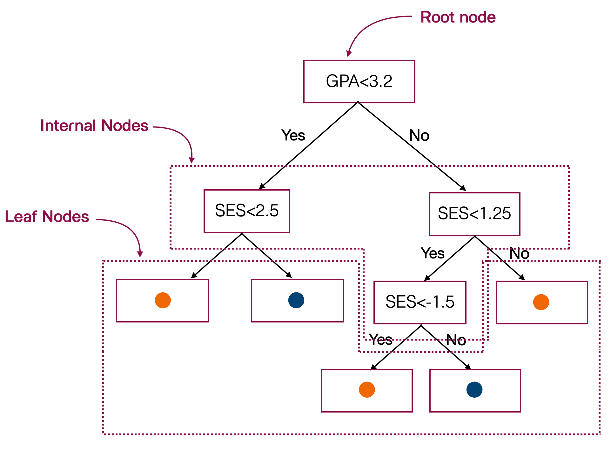
การเรียนรู้ของ decision tree แบบ CART เป็นการสร้างพื้นที่ปิดล้อมรูปสี่เหลี่ยมที่ไม่ทับซ้อนกันเพื่อแบ่งส่วนของข้อมูลภายใน feature space ออกเป็นส่วนย่อย ๆ โดยการแบ่งแต่ละครั้งจะทำให้เกิดส่วนย่อยใหม่ขึ้น 2 ส่วน และดำเนินการแบ่งพื้นที่ดังกล่าวทวนซ้ำไปเรื่อย ๆ จนกว่าจะถึงจุดที่หยุดกระบวนการ เรียกกระบวนการแบ่งส่วนของพื้นที่ดังกล่าวว่า binary recursive partitioning
Partitioning: Regression Tree
สมมุติให้ R1 และ R2 เป็นพื้นที่ย่อยที่เกิดขึ้นจากการแบ่งส่วนครั้งหนึ่งภายใต้ feature space การพิจารณาว่าแบ่งส่วนย่อยดังกล่าวควรแบ่งโดยใช้ตัวแปรอิสระใด และแบ่งที่ค่าใดของตัวแปรอิสระนั้น จะพิจารณาจากความคลาดเคลื่อนระหว่างค่าจริงกับค่าทำนายภายในแต่ละพื้นที่ R โดยสำหรับปัญหาแบบ regression อาจพิจารณาความคลาดเคลื่อนดังกล่าวให้ค่าผลรวมกำลังสองโดยรวม (total SSE) ของ terminal node ที่เป็นผลรวมระหว่าง SSE ของแต่ละพื้นที่มีค่าต่ำที่สุด เขียนเป็นสูตรได้ดังนี้
\[ Total \ SSE = \sum_{i \in R_1}(y_i-c_1)^2+\sum_{i \in R_2}(y_i-c_2)^2 \]
เพื่อให้ผู้อ่านเห็นภาพการแบ่งพื้นที่ใน feature space สำหรับปัญหา regression ด้วยเกณฑ์ข้างต้น ขอให้พิจารณาตัวอย่างต่อไปนี้ สมมุติว่าผู้วิเคราะห์มีข้อมูลของตัวแปรตาม y กับตัวแปรอิสระ x อย่างละตัว โดยตัวแปรดังกล่าวมีความสัมพันธ์กันแบบเชิงเส้นโค้งดังรูป ในเบื้องต้นผู้วิเคราะห์สามารถคำนวณ Total SSE ของชุดข้อมูลดิบได้ดังนี้ \(Total \ SSE = \sum_{i=1}^{1000}(y_i-\bar{y})^2=692.299\)
set.seed(123)
x<-runif(1000,0,8)
y<-rnorm(1000, sin(x), 0.5)
data <- data.frame(x,y)
data %>% ggplot()+
geom_point(aes(x=x, y=y),col="steelblue", alpha=0.6)+
theme_light()+
ggtitle("Total SSE = 692.299")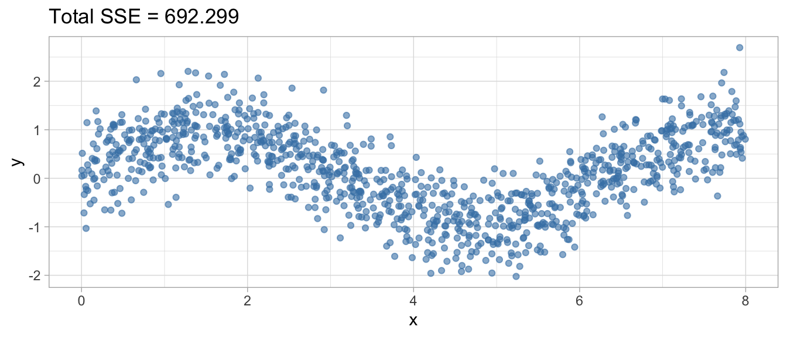
ขั้นตอนแรกของอัลกอริทึม decision tree แบบ binary recursive partitioning คือการหา root node ซึ่งทำได้ด้วยการพิจารณาเลือกคะแนนจุดตัดของตัวแปรอิสระที่เหมาะสม จากรูปด้านล่างผู้อ่านจะเห็นว่าการแบ่งส่วนย่อยของ feature space ด้วยจุดตัดที่แตกต่างกันจะทำให้ Total SSE ที่คำนวณจาก \(Total \ SSE = \sum_{i \in R_1}(y_i-c_1)^2+\sum_{i \in R_2}(y_i-c_2)^2\) มีค่าแตกต่างกันไป เป้าหมายของอัลกอริทึม decision tree ในขั้นตอนนี้คือการจุดตัดที่ทำให้ค่า Total SSE ดังกล่าวมีค่าต่ำที่สุด ซึ่งจะหมายความว่าการแบ่งส่วนย่อยนั้นสามารถสร้าง decision tree ที่ทำนายค่าของตัวแปรตามได้ใกล้เคียงค่าจริงมากที่สุดเท่าที่จะเป็นไปได้
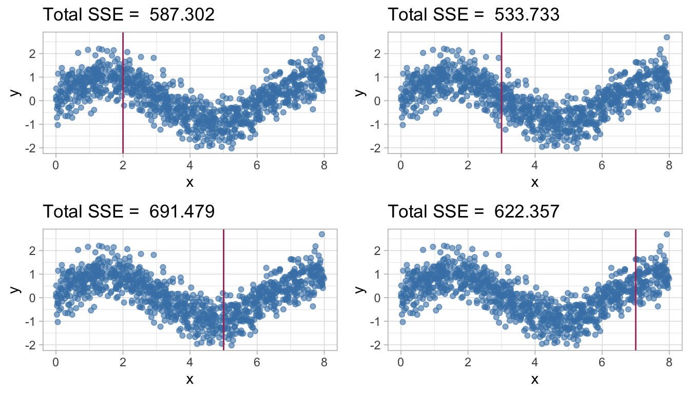
ในความเป็นจริงอัลกอริทึม binary recursive partitioning จะพิจารณาค่า Total SSE ที่คำนวณจากจุดตัดทุกค่าที่เป็นไปได้บน feature space จากนั้นจะเลือกจุดตัดที่ทำให้ค่า Total SSE ต่ำที่สุดมาเป็นจุดแบ่งพื้นที่บน x หรือ feature space พื้นที่ที่เกิดขึ้นนี้จะเป็น terminal node สำหรับขั้นตอนนี้ ซึ่งจะมีจำนวน 2 terminal node ได้แก่ terminal node เมื่อ \(x < 2.7\) และ \(x \geq 2.7\) โดยค่าเฉลี่ยของตัวแปรตาม y ใน terminal node \(x < 2.7\) มีค่าเท่ากับ 0.705 หน่วย และใน terminal node \(x≥2.7\) พบว่าตัวแปรตาม y มีค่าเฉลี่ยเท่ากับ -0.137 หน่วย ซึ่งทำให้ค่า SSE ของแต่ละ terminal node มีค่าเท่ากับ 106.282 และ 427.451 ตามลำดับ และ Total SSE มีค่าเท่ากับ 533.733
ผู้อ่านจะสังเกตเห็นว่า Total SSE เมื่อมีการสร้าง root node แล้วมีค่าลดต่ำลงเมื่อเปรียบเทียบกับก่อนที่จะสร้าง root node โดยความแตกต่างระหว่าง Total SSE ก่อนและภายหลังจากสร้าง root node มีค่าเท่ากับ 692.299 - 533.733 = 158.566 ผลต่างดังกล่าวเรียกว่า information gain หรือสารสนเทศที่ decision tree สามารถเรียนรู้ได้เพิ่มในแต่ละขั้นตอนของการเรียนรู้
Loading required package: rpart
Attaching package: 'rpart'The following object is masked from 'package:dials':
prune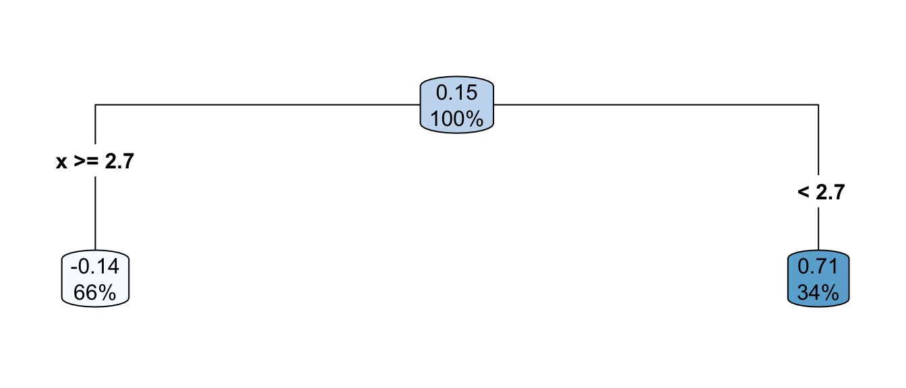
Warning: Using `size` aesthetic for lines was deprecated in ggplot2 3.4.0.
ℹ Please use `linewidth` instead.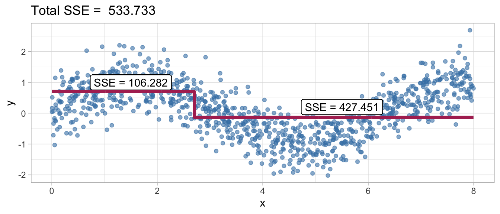
เนื่องจากโมเดลข้างต้นยังมีความลำเอียงอยู่ในระดับที่สูงมาก ในมุมมองของอัลกอริทึมจะเห็นว่า information gain ในขั้นตอนก่อนหน้ายังมีค่าสูงอยู่ นั่นหมายความว่ายังมีโอกาสที่อัลกอริทึมจะสามารถเรียนรู้สารสนเทศจากข้อมูลเพิ่มเติมได้อีก อัลกอริทึม decision tree จะทวนซ้ำการดำเนินการข้างต้นอีกครั้งหนึ่ง โดยจะพิจารณาหาจุดตัดที่เหมาะสมภายในแต่ละ terminal nodes ซึ่งใช้เกณฑ์เดียวกันกับการหาจุดตัดในขั้นตอนการสร้าง root node ในข้างต้น รูปด้านล่างแสดงผลลัพธ์ที่ได้จากการทวนซ้ำอัลกอริทึมดังกล่าว ซึ่งจะเห็นว่ามีการแบ่ง terminal node \(x \geq 2.7\) เดิมให้กลายเป็น terminal node ใหม่ โดยใช้จุดตัดที่ x = 6.1 ในขั้นตอนนี้ผู้อ่านจะเห็นว่า terminal node \(x \geq 2.7\) เดิมจะเปลี่ยนสถานะเป็น internal node ของ decision tree แทน และ terminal node ของโมเดลทำนายจะมีเพิ่มขึ้นจากเดิม 2 nodes กลายเป็น 3 nodes
จากรูปด้านล่างจะเห็นว่าโมเดลทำนายในขั้นตอนนี้มีประสิทธิภาพในการทำนายมากขึ้น เมื่อเปรียบเทียบกับโมเดลที่มีแต่ root node ในขั้นตอนแรก โดยพบว่า terminal nodes ทั้ง 3 nodes ในโมเดลนี้มีค่า SSE เท่ากับ 106.282, 170.316 และ 73.372 ตามลำดับ ซึ่งจะมี Total SSE เท่ากับ 351.97 และเมื่อเปรียบเทียบกับโมเดล root node ก่อนหน้าจะได้ว่า information gain ของโมเดลทำนายนี้มีค่าเท่ากับ 533.733 - 351.97 = 181.763
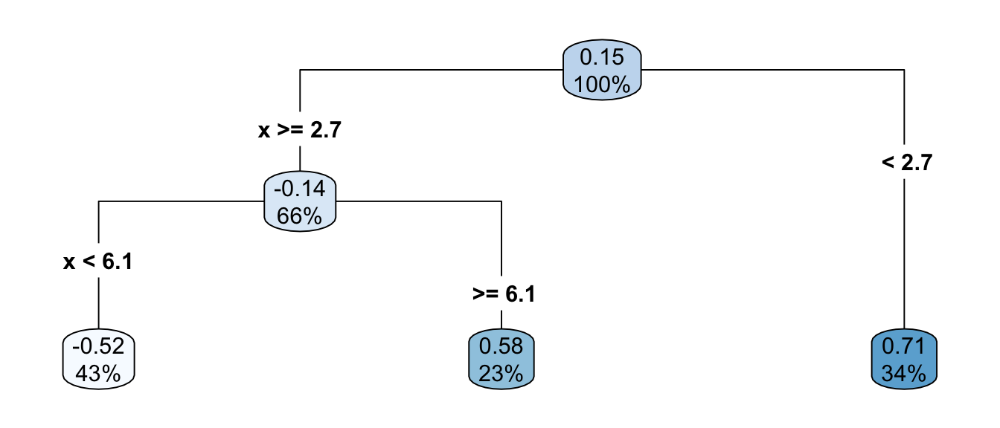
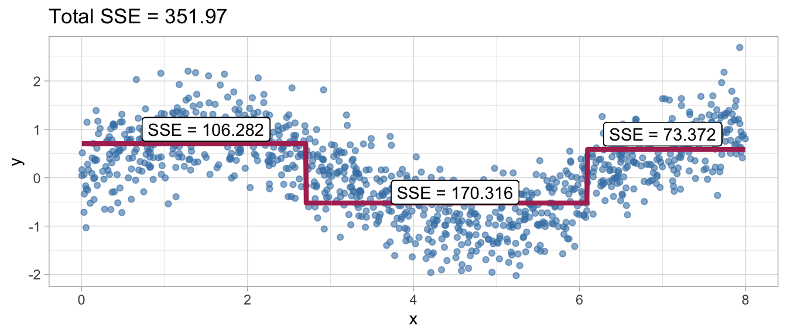
การดำเนินการตามอัลกอริทึมข้างต้นจะดำเนินการทวนซ้ำไปเรื่อย ๆ จนกระทั่งค่า information gain ที่ได้จะมีค่าน้อยลู่เข้าสู่ 0 ซึ่งหมายความว่าโมเดลไม่สามารถเรียนรู้สารสนเทศใด ๆ จากข้อมูลได้เพิ่มเติมแล้ว รูปด้านล่างแสดงโมเดลทำนายภายหลังจากอัลกอริทึมดังกล่าวหยุดการดำเนินการทวนซ้ำแล้ว จะเห็นว่าการแบ่งส่วนย่อยตามอัลกอริทึม recursive binary partitioning ดังกล่าวทำให้ได้โมเดลทำนายที่สามารถเรียนรู้ความสัมพันธ์เชิงเส้นโค้งที่พบในข้อมูลได้อย่างมีประสิทธิภาพ
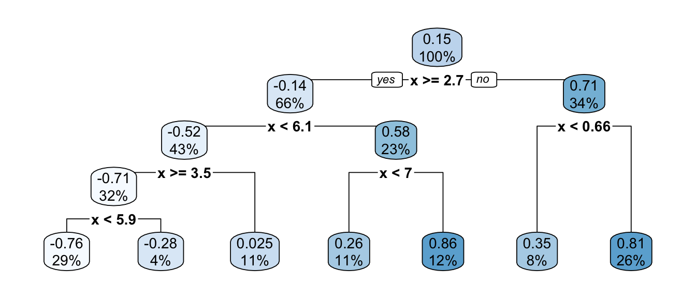
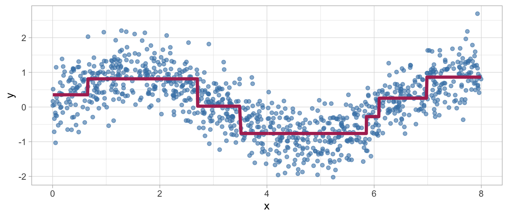
Partitioning: Classification Tree
สำหรับปัญหา classification การแบ่งส่วนย่อยดังกล่าวจะในทำนองเดียวกับ regression tree อย่างไรก็ตามการพิจารณาความคลาดเคลื่อนภายใน terminal node จะพิจารณาจากตัวบ่งชี้ที่รูปของดัชนีที่เรียกว่า impurity โดย decision tree จะเลือกแบ่งพื้นที่ภายใน feature space ที่ทำให้ค่า impurity ดังกล่าวมีค่าต่ำสุด ดัชนี impurity ที่สามารถใช้เป็นเกณฑ์มีหลายตัว เช่น
- Gini index = \(\sum p(1-p) = 1-\sum p^2\)
- Entropy = \(-\sum plog(p)\)
- Misclassification rate
ดัชนี impurity ข้างต้นมีลักษณะเป็นการวัดความแปรปรวนหรือความแตกต่างกันภายใน node ซึ่งสอดคล้องกับความหมายของ SSE ใน regression tree ข้างต้น
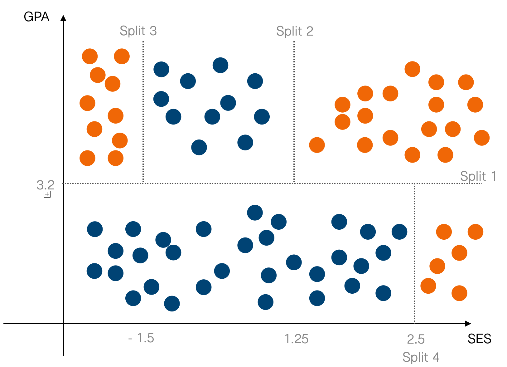
จากรูปตัวอย่างด้านบนจะเห็นว่าเป็นปัญหา classification โดยเป็นการสร้างโมเดลจำแนกนักเรียนระหว่างกลุ่มที่สอบผ่านและสอบตก (สีส้ม และสีน้ำเงิน) โดยใช้ตัวแปรอิสระได้แก่ GPA และ SES เป็นตัวแปรทำนาย ดังนั้นในกรณีนี้ feature space หรือปริภูมิของตัวแปรอิสระจะประกอบด้วย GPA และ SES ที่สามารถ plot เป็นระนาบ 2 มิติได้ดังรูป
สมมุติว่าผู้วิเคราะห์ต้องการทำนาย deposit โดยใช้ตัวแปรอิสระจำนวน 3 ตัวได้แก่ default, housing และ loan ขั้นแรกของการพัฒนา decision tree คือการกำหนด root node ที่เหมาะสม คำถามคือ ควรใช้ตัวแปรอิสระตัวใดเป็น root node ดีเพราะเหตุใด?
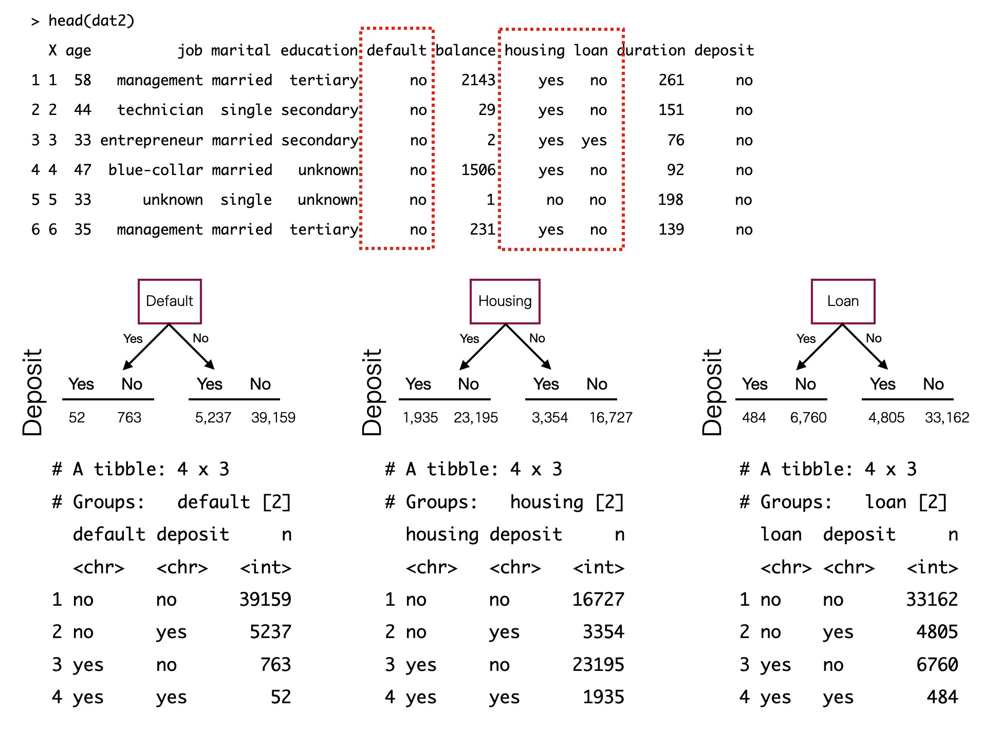
การพิจารณาว่า root node ตัวใดเหมาะสมที่สุด สามารถพิจารณาได้จากความเป็นเอกพันธ์กันของค่าตัวแปรตามภายในกลุ่มย่อยที่แบ่งโดยตัวแปรอิสระ หรืออาจพิจารณาในทางกลับกันคือดูจากความไม่เป็นเอกพันธ์กันของค่าตัวแปรตามภายในกลุ่มย่อยดังกล่าว ความไม่เป็นเอกพันธ์นี้สามารถวัดได้โดยใช้สถิติในกลุ่มที่เรียกว่า impurity ดังที่ได้กล่าวไว้ข้างต้น
decision tree จะเลือกตัวแปรและจุดแบ่งที่ทำให้ค่า impurity ดังกล่าวมีค่าต่ำที่สุด เพราะนั่นจะหมายถึงตัวแปรและจุดแบ่งดังกล่าวจะทำให้ decision tree สามารถทำนายค่าของตัวแปรตามได้ดีที่สุด จากรูปด้านล่างแสดงการเปรียบเทียบค่า total impurity จากการแบ่ง 3 แบบคือ การแบ่งด้วย Default, Housing และ Loan ซึ่งจะเห็นว่าการแบ่งด้วย Housing ให้ค่า impurity ต่ำที่สุด ดังนั้นการแบ่ง Housing ดังในรูปจึงถูกเลือกเป็น partition ตัวแรกของอัลกอริทึม และจะเรียก Housing ว่า Root node
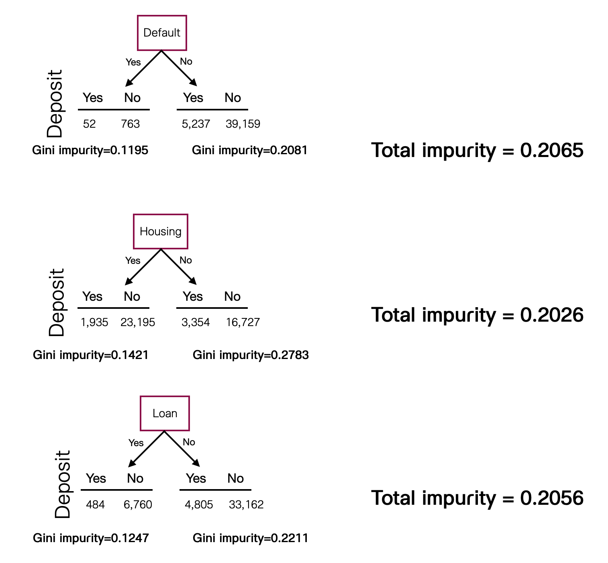
Laura Elena Raileanu and Kilian Stoffel, “Theoretical comparison between the Gini Index and Information Gain criteria” Annals of Mathematics and Artificial Intelligence 41: 77–93, 2004.
จากการคำนวณ impurity ด้วย Gini index ข้างต้นจะเห็นว่า Housing เป็นตัวแปรอิสระที่ทำให้ impurity โดยรวมของการแบ่งส่วนย่อยทั้งสองส่วนมีค่าต่ำที่สุด จากเงื่อนไขในตัวอย่างที่กำหนดข้างต้น Housing จึงจะเป็นตัวแปรอิสระที่ถูกเลือกเป็น root node ก่อน ขั้นตอนถัดมาของอัลกอริทึมคือการพิจารณาหา internal nodes ที่จะแบ่งส่วนข้อมูลภายใต้เงื่อนไขของ root node แบ่งไว้ข้างต้น กล่าวง่าย ๆ คือ หาตัวแปรอิสระตัวอื่นมาแบ่งข้อมูลในแต่ละกิ่งของ root node ต่อ
รูปด้านล่างแสดงการเปรียบเทียบ impurity ของตัวแปรตาม (deposit) ที่เกิดขึ้นจากการแบ่งส่วนข้อมูลภายใต้เงื่อนไขที่ Housing = Yes จากรูปจะเห็นว่าเมื่อใช้ Default เป็นตัวแบ่งจะได้ค่า impurity เท่ากับ 0.9731 แต่ถ้าใช้ Loan เป็นตัวแบ่งจะได้ค่า impurity เป็น 0.1420 ระหว่างตัวแปรอิสระสองตัวนี้ผู้อ่านคิดว่าควรเลือกตัวแปรอิสระใดมาเป็น internal node ในตำแหน่งดังกล่าว
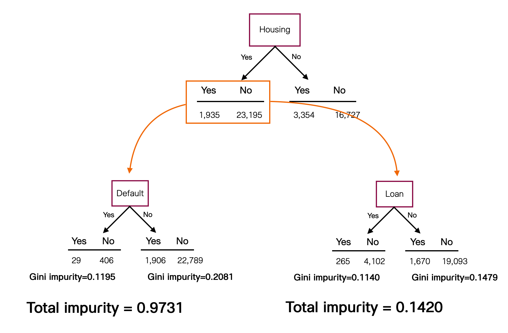
การแบ่งส่วนข้อมูลในแต่ละครั้งจะทำให้ความไม่เป็นเอกพันธ์กันของข้อมูลลดลง เพราะข้อมูลจะถูกจัดระเบียบให้ข้อมูลที่มีคุณลักษณะที่คล้ายคลึงกันจะมาอยู่ภายใต้ node เดียวกัน ส่วนข้อมูลที่แตกต่างกันจะอยู่คนละ node ความไม่เป็นระเบียบหรือความไม่เป็นเอกพันธ์ที่ลดลงนี้แปรผกผันกับสารสนเทศที่โมเดลเรียนรู้ได้เพิ่มขึ้น เราเรียกปริมาณสารสนเทศที่โมเดลเรียนรู้ได้เพิ่มขึ้นว่า information gain ซึ่งสามารถคำนวณง่าย ๆ โดยใช้ผลต่างของค่า impurity ก่อน และหลังการแบ่ง ดังนี้
\[information \ gain = Gini(before) = Gini(after)\]
จากรูปข้างต้นจะได้ว่า information gain ของตัวแปร Loan มีค่าเท่ากับ 0.1421 - 0.1420 = 0.0001
การแบ่งในอัลกอริทึมข้างต้นจะดำเนินไปจนกระทั่ง information gain มีค่าต่ำที่สุดหรือเข้าใกล้ 0 ซึ่งหมายความว่าไม่มีสารสนเทศอะไรที่โมเดลสามารถเรียนรู้ได้แล้ว จุดเด่นของ decision tree คือสามารถเรียนรู้ความสัมพันธ์ที่ไม่ใช่เชิงเส้นตรงได้ นอกจากนี้ยังมีความแกร่งมากกว่าการวิเคราะห์การถดถอยเชิงเส้น และการวิเคราะห์การถดถอยแบบ logistic นอกจากนี้ decision tree ยังเป็นอัลกอริทึมการเรียนรู้ที่มีความสามารถในการคัดเลือกตัวแปรอิสระในตัวมันเอง (เพราะอะไร?)
5.2 Data Preprocessing สำหรับ decision tree
Decision tree แบบ recursive binary partitioning เป็นอัลกอริทึมที่มีความยืดหยุ่นต่อข้อมูลนำเข้ามาก กล่าวคือเป็นอัลกอริทึมที่ไม่มีข้อกำหนดเกี่ยวกับข้อมูลนำเข้า ผู้วิเคราะห์สามารถนำข้อมูลของตัวแปรอิสระเข้าสู่อัลกอริทึมได้โดยไม่จำเป็นต้องแปลงตัวแปรเชิงปริมาณให้อยู่ในสเกลมาตรฐาน และไม่จำเป็นต้องแปลงตัวแปรจัดประเภทให้เป็นตัวแปรดัมมี นอกจากนี้ decision tree ยังเป็นอัลกอริทึมที่มีความแกร่งต่อปัญหา multicollinerity และปัญหาตัวแปรอิสระไม่ให้สารสนเทศด้วย เนื่องจาก logic ของอัลกอริทึมที่จะคัดเลือกตัวแปรอิสระที่ให้จุดแบ่งพื้นที่ที่ทำให้ค่าความคลาดเคลื่อนรวมต่ำที่สุด decision tree ดังกล่าวจึงมีความสามารถในการคัดเลือกตัวแปรอิสระในตัวมันเอง ถือว่าเป็น feature selection ประเภท embedded method ตัวหนึ่ง
5.3 Hyperparameters สำหรับ decision tree
decision tree ที่ใช้อัลกรอิทึมการเรียนรู้แบบ recursive binary partitioning สามารถประมวลผลบน tidymodels frameworks โดยใช้ engine rpart ทั้งนี้อัลกอริทึมดังกล่าวจะมี hyperparameters ที่สามารถปรับแต่งได้จำนวน 3 ตัวได้แก่
cost_complexityคือค่าคงที่ \(\alpha > 0\) เรียกว่า penalty term เมื่อมีการกำหนดค่านี้ฟังก์ชันวัตถุประสงค์ของ decision tree จะมีการเพิ่ม penalty term ดังกล่าวเข้ามาเป็นดังนี้ \(E_{reg}(T) = E(T)+\alpha|T|\) โดยที่ \(E(T)\) คือ total error หรือ total impurity ของ terminal nodes จากลักษณะของฟังก์ชันวัตถุประสงค์ดังกล่าวจะเห็นว่า \(\alpha\) เป็น hyperparameter ที่จะทำให้ total error ดังกล่าวมีค่าสูงขึ้น ซึ่งทำให้การแบ่ง terminal nodes ทำได้ยากขึ้น ยิ่งกำหนดให้ \(\alpha\) มีค่ามากขึ้น ความยากในการแบ่ง terminal nodes ก็จะยากขึ้นเรื่อย ๆ การกำหนด hyperparameter ดังกล่าวจึงเป็นการควบคุมไม่ให้ decision tree แบ่งส่วนพื้นที่ย่อยมากเกินไปจนทำให้เกิดปัญหา overfittingtree_depthใช้กำหนดความลึกของต้นไม้ที่สูงที่สุดนับจาก root node ค่าเริ่มต้นคือ 30 การกำหนด hyperparameter ค่านี้จึงช่วยควบคุมความลึกหรือความซับซ้อนของโมเดลทำนายที่สร้างจาก decision tree โดยตรงmin_nจำนวนหน่วยข้อมูลขั้นต่ำที่ต้องมีในแต่ละ terminal node ค่าเริ่มต้นคือ 20 การกำหนด hyperparameter นี้ทำให้อัลกอริทึมจะไม่สามารถแบ่ง terminal nodes จนมีขนาดเล็กเกินไปได้ เป็นการควบคุมความลึกหรือความซับซ้อนของโมเดลทำนายที่ได้จาก decision tree เช่นเดียวกัน
ลองพิจาณา decision tree ที่มีการกำหนด hyperparameter ที่แตกต่างกันด้านล่าง จะเห็นว่าโมเดลทำนายที่ได้จะมีขนาดและความซับซ้อนที่แตกต่างกันไปขึ้นอยู่กับการกำหนด
dat <- read.csv("https://raw.githubusercontent.com/ssiwacho/2758688_ML/main/week%201/TeacherSalaryData.csv")
dat<-dat[,-1]
fit1 <- decision_tree(min_n=10, cost_complexity = 10^-5) %>%
set_mode("regression") %>%
fit(salary ~., data=dat)
fit2 <- decision_tree(min_n=10, cost_complexity = 10^-3) %>%
set_mode("regression") %>%
fit(salary ~., data=dat)
fit3 <- decision_tree(min_n=10, cost_complexity = 10^-2) %>%
set_mode("regression") %>%
fit(salary ~., data=dat)
par(mfrow=c(3,1))
fit1$fit %>% rpart.plot(main = "min_n=10, cost_complexity = 10^-5")
fit2$fit %>% rpart.plot(main = "min_n=10, cost_complexity = 10^-3")
fit3$fit %>% rpart.plot(main = "min_n=10, cost_complexity = 10^-2")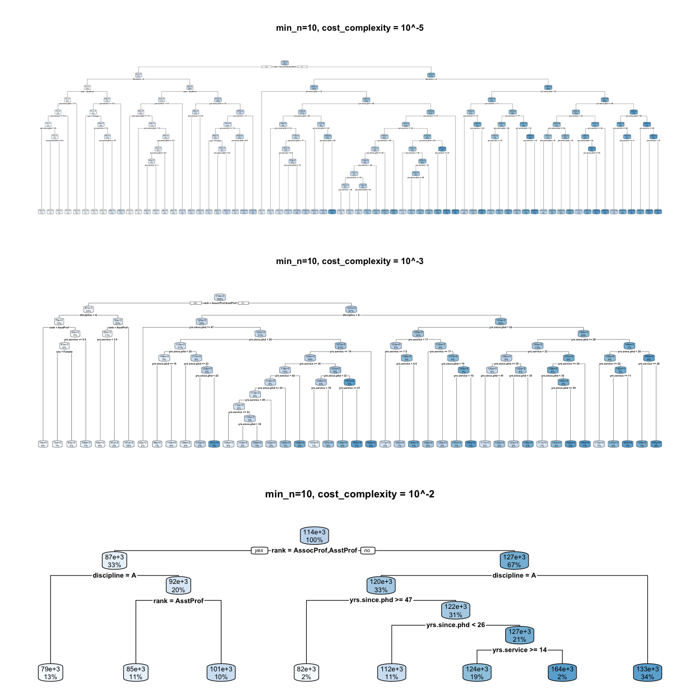
ปัญหาเกี่ยวกับการกำหนด hyperparameters ข้างต้นคือ ผู้วิเคราะห์ไม่สามารถประมาณค่าพารามิเตอร์ดังกล่าวจากข้อมูลได้โดยตรง การกำหนดค่าที่เหมาะสมให้กับ hyperparameters ดังกล่าวจะใช้ validation dataset ที่สร้างขึ้นจากกระบวนการสุ่มซ้ำ (resampling) มาช่วยในการประมาณค่าความคลาดเคลื่อนของโมเดลทำนาย (เรียกว่า validation error) เมื่อมีการกำหนด hyperparameters เป็นค่าต่าง ๆ จากนั้นทำการวิเคราะห์ผลโดยเลือกชุดของค่า hyperparameters ที่ทำให้ validation error มีค่าต่ำที่สุดไปใช้ในโมเดล เรียกกระบวนการนี้ว่า hyperparameter tuning
5.4 Hyperparameter tuning using tidymodels Workflow
บทเรียนนี้จะกล่าวถึงหลักและวิธีการปรับแต่ง hyperparameter ของอัลกอริทึมการเรียนรู้ โดยจะใช้อัลกอริทึม decision tree เป็นตัวอย่าง โดยจะสร้างโมเดลทำนายเงินเดือนครู ข้อมูลที่ใช้ได้จาก classification.csv รายละเอียดมีดังนี้
Hyperparameter Tuning
ดังที่ได้กล่าวไปก่อนหน้านี้แล้วว่า hyperparameter เป็นพารามิเตอร์ในอัลกอริทึมการเรียนรู้ที่ไม่สามารถประมาณค่าได้โดยตรง ดังนั้นกระบวนการกำหนดค่า hyperparameter ให้เหมาะสมจึงจะใช้เทคนิคการสุ่มซ้ำ (reampling) เข้ามาช่วย ซึ่งมีขั้นตอนการดำเนินการดังนี้
- นำชุดข้อมูลฝึกหัดที่จะใช้พัฒนาโมเดลมาแบ่งออกเป็นสองส่วนด้วยวิธีการสุ่มซ้ำ (หรือ random sampling with replacement) ส่วนแรกจะเรียกว่า training data และส่วนที่สองจะเรียกว่า validation data
- การสุ่มซ้ำในข้อ 1. สามารถทำได้หลายวิธีการ เช่น การทำ k-folds CV หรือการทำ bootstrapping โดยปกติ bootstrapping เป็นวิธีการที่มีแนวโน้มจะให้ผลการประมาณประสิทธิภาพการทำนายของโมเดลที่แม่นยำกว่า k-folds CV แต่เหมาะสำหรับสถานการณ์ที่ผู้วิเคราะห์มีชุดข้อมูลฝึกหัดที่มีขนาดใหญ่ ในกรณีที่ชุดข้อมูลฝึกหัดมีขนาดเล็กควรเลือกใช้ k-folds CV
- กำหนดโมเดลการเรียนรู้ที่ใช้ และกำหนดค่า hyperparameters ที่ต้องการปรับแต่ง
- สร้าง grid ของ hyperparameters เพื่อใช้ทดลองกำหนดให้กับโมเดล การสร้าง grid ดังกล่าวอาจทำได้สองวิธีการ วิธีการแรกเรียกว่า regular grid เป็นการสร้าง grid จาก combination ทั้งหมดของค่า hyperparameter ที่เป็นไปได้ ส่วนวิธีการที่สองเรียกว่า random grid ที่การสุ่มตัวอย่างของ grid combination มาทำการศึกษา
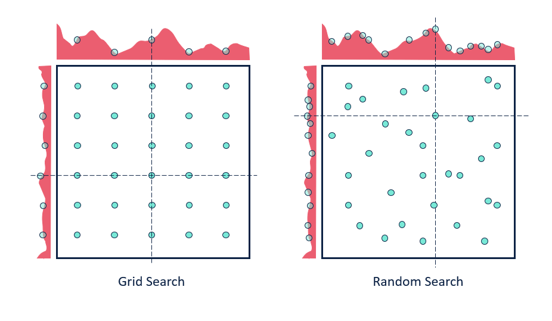
- นำ hyperparameter แต่ละชุดภายใน grid ที่กำหนดไว้ในข้อ 4. (ในที่นี้สมมุติจะเรียกว่าชุด A) กำหนดให้กับอัลกอริทึมจากนั้นดำเนินการประมวลผลกับชุดข้อมูลฝึกหัดเพื่อสร้างโมเดลทำนาย
- เมื่อได้โมเดลทำนายในข้อ 5. จะนำโมเดลไปใช้ทำนายหรือจำแนกข้อมูลใน validation data แล้วคำนวณเป็นค่าประสิทธิภาพการทำนาย
- สลับชุดข้อมูล training และ validation จากนั้นทวนซ้ำข้อ 5 และ 6 จนครบ ค่าเฉลี่ยของประสิทธิภาพที่ได้จะเป็นประสิทธิภาพจากการกำหนด hyperparameter ชุด A
- เปลี่ยน hyperparamter เป็นชุดต่อไปแล้วทวนซ้ำข้อ 5 - 7
- นำค่าประมาณประสิทธิภาพของ hyperparameter แต่ละชุดมาเปรียบเทียบกัน แล้วเลือกชุดของ hyperparameter ที่มีประสิทธิภาพสูงที่สุดเป็นค่า hyperparameter ของโมเดล
การดำเนินการข้างต้นสามารถทำได้ใน tidymodels ดังนี้
dat<-read.csv("https://raw.githubusercontent.com/ssiwacho/2758688_ML/main/week%201/classification.csv")
glimpse(dat)
table(dat$Class)
dat<-dat[,-1]
split <- initial_split(dat, prop = 0.8,strata = Class)
train <- training(split)
test <- testing(split)
glimpse(train)
## recipe
class_rec <- recipe(Class ~ . , data=train)%>%
step_string2factor(Class, levels=c("drop","stay"))%>%
prep()
train_preproc <- class_rec %>%
bake(NULL)
test_preproc <- class_rec %>%
bake(new_data = test)
train_preproc_resamples <- vfold_cv(train_preproc,
v=5,
repeats=1)
## model specification
tree_mod <- decision_tree(cost_complexity = tune(),
min_n = tune())%>%
set_engine("rpart")%>%
set_mode("classification")
## create workflow
tree_workflow <- workflow() %>%
add_recipe(class_rec) %>%
add_model(tree_mod)
## create grid
p <- parameters(cost_complexity(),
min_n(range=c(10,40)))
regular_grid <- grid_regular(p, levels=5)
eval_metric <- metric_set(roc_auc,sens, spec)
clt <- control_grid(save_pred = TRUE,
verbose = TRUE,
parallel_over = "everything")
tune_mod <- tree_workflow %>%
tune_grid(resamples = train_preproc_resamples,
grid = regular_grid,
metrics = eval_metric,
control = clt
)
tune_mod %>% autoplot()
best<-show_best(tune_mod, n=30, metric="sens")
best
final_tree <- tree_workflow %>%
finalize_workflow(best[1,]) %>%
last_fit(split,
metrics = eval_metric)
### visualizing tree model
final_tree$.workflow[[1]]$fit$fit$fit %>%
rpart.plot()
final_tree %>%
extract_fit_engine() %>%
rpart.plot(roundint=F)
### Evaluate performance on test datset
final_tree %>% collect_metrics()